背景与问题
应用愿景 · 技术基础 · 复杂环境
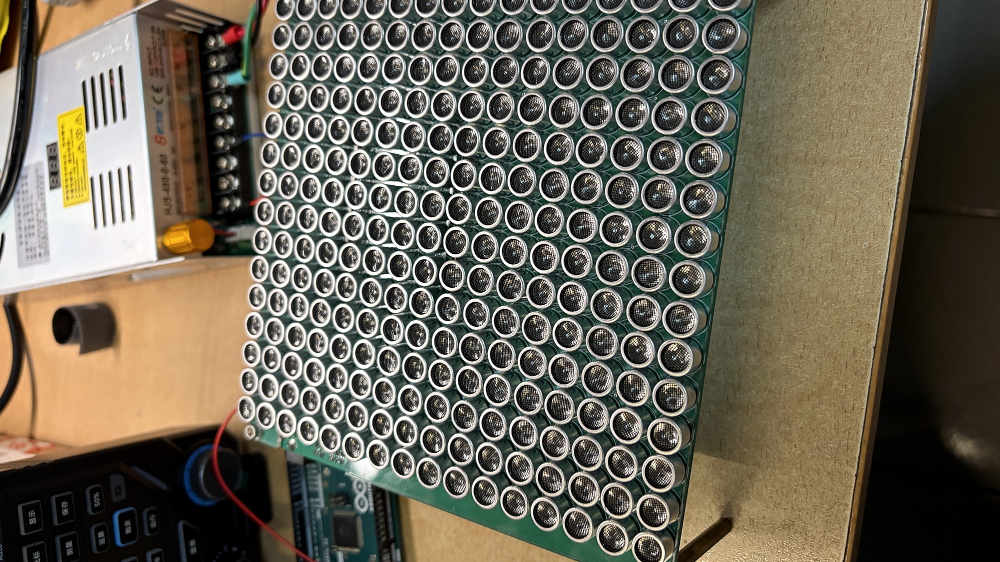
HAPTIFIELD · 超声场逆向设计
三维 Helmholtz 求解
解析相位梯度 · SonicSurface 实物阵列
让环境进入模型，让相位来自物理。
这是我们正在使用的 SonicSurface 16×16 超声相控阵。项目目标是让这 256 个阵元在存在反射、散射和材料变化的环境中，仍能在指定位置形成可控声场。
我们的工作贯穿四层：把几何写进三维物理模型，高效求解复声压场，用解析梯度反推出阵元相位，最后把相位经过标定和量化送到真实阵列。
五个章节回答：为什么做、怎样计算、效果如何、如何落地。
应用愿景 · 技术基础 · 复杂环境
技术路线 · Helmholtz · COMSOL · 响应基 · VJP
声场效果 · 算法比较 · 更新器消融 · 共同门槛
SonicSurface 阵列 · 相位标定 · FPGA 下发
已完成链路与下一步验证
接下来分五部分。先说明可编程超声场的应用价值和复杂环境问题；再介绍三维求解器、COMSOL 交叉验证、响应基和 VJP；随后给出声场效果与算法实验；最后展示 SonicSurface 实物和相位标定，并总结项目贡献。
无需穿戴的空间触觉，为数字内容、远程操作和公共交互增加一条触觉通道。
为空间按钮、表面纹理和三维内容提供触觉反馈。
将机器人与远端环境的交互状态映射为空中触觉提示。
支持手术室、洁净空间和公共终端中的非接触确认。
在视线之外提示方向、边界、目标位置和操作步骤。
可编程超声场提供的是一种无需佩戴设备的空间触觉通道。它可以让用户触摸 XR 中的虚拟对象，也可以把远程机器人接触到的信息反馈到操作者手上，增强遥操作的临场感。
同一能力还能用于医疗和洁净环境中的无接触确认，以及空间导航、无障碍提示和操作引导。四类场景共享一个关键要求：当人、工具和周围设备进入传播空间后，焦点仍要准确落到目标位置。
相控阵通过控制阵元相位，在空间中塑造压力焦点、轨迹与图案。
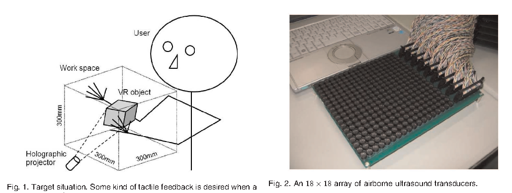
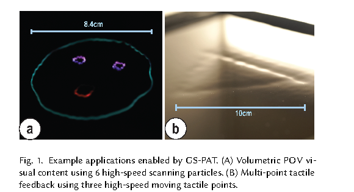
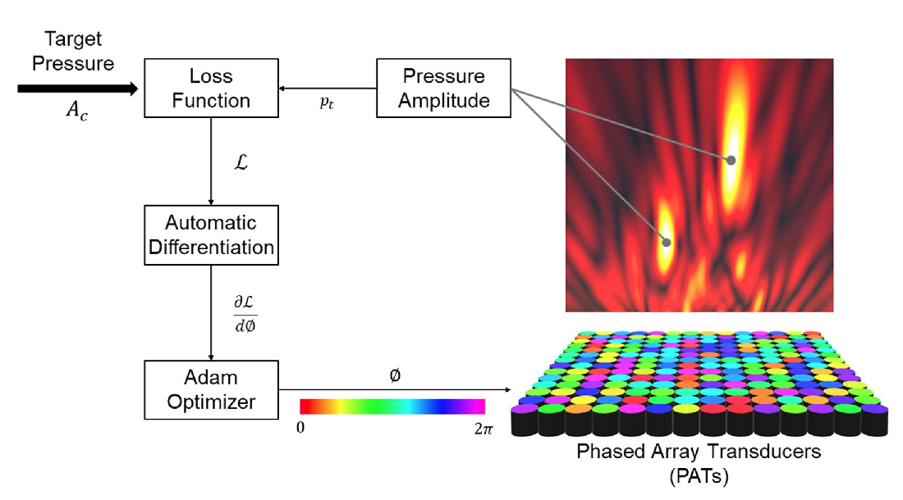
空气超声相控阵把触觉和物体操控从实体接触中解耦。早期工作证明了裸手非接触触觉，随后发展到多点触觉、体积显示和任意声场图案；可微声学全息进一步把目标声场直接连接到阵元相位。
这些能力可服务 XR 交互、无菌界面、声悬浮、微粒操控和定向声场。它们共享同一个核心问题：如何让大量阵元协同，在三维空间形成设计者希望的声压分布。
障碍物、反射面和手部会改变传播路径，也会改变最优相位。
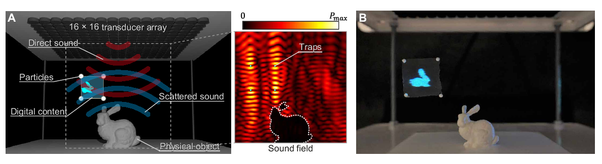
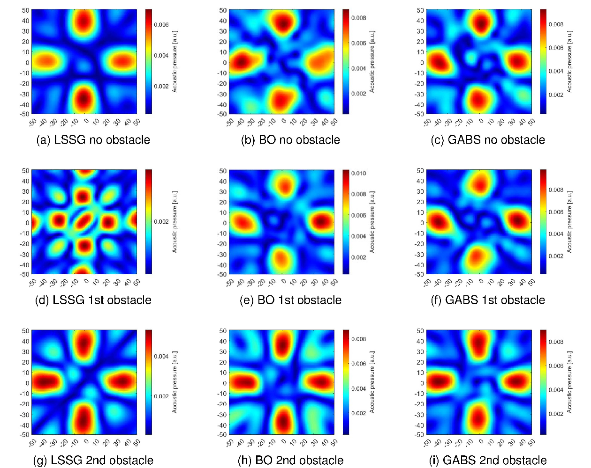
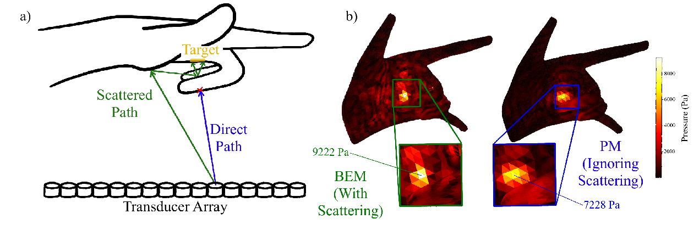
已有研究已经开始处理真实环境。Hirayama 等显式建模任意散射体，Chen 等通过测量重建未知障碍物下的等效通道，Mukherjee 等进一步研究手部散射与触觉感知。
我们的路线针对几何与材料信息可获得的场景：用 SDF 把障碍物写入异质三维 Helmholtz 方程，再用解析梯度求相位，并连接到 SonicSurface 实物阵列。这样既能预测完整三维场，也能追踪每个结果来自哪一种物理机制。
输入是几何和目标点，输出是可下发到阵列的 256 路相位。
Mesh / SDF
介质与边界
变参数 Helmholtz
7 点差分
边界凝聚
cuDSS 分解复用
focal_contrast
VJP + Adam
标定补偿
32 档量化
整条路线从场景开始：几何通过 SDF 进入材料场，边界条件和阵元激励进入 Helmholtz 方程。求解器建立每个阵元的完整场响应 G，优化器用 G 快速合成声场并通过 VJP 更新相位。
得到的连续相位进入硬件侧，叠加逐阵元标定偏移并量化为 32 档，再按 SonicSurface 的通道顺序发送。这五个模块共享同一套阵元编号和场景坐标。
三维变参数 Helmholtz 模型，同时描述介质、声源与反射。
u：复声压
ρ：密度 c：声速
Mesh → 有符号距离场
→ 平滑材料参数 ρ(x)、c(x)
平滑过渡保持材料场对几何参数连续。
六个相邻网格点耦合
组装稀疏复数系统
阵面 Dirichlet · 开放 Sommerfeld
刚性反射边界
消去指定值与开放边界行
cuDSS 分解，再回代恢复全场
缩小分解系统，同时恢复可利用的复对称结构。
首先将几何转成 SDF，用平滑插值构造密度和声速场。变参数 Helmholtz 方程通过七点差分离散成 Au=b，边界包括阵元指定复声压、开放边界和刚性反射。
我们对指定值与开放边界行进行等价消元，得到更小的复对称系统，交给 cuDSS 分解，再回代恢复完整边界。固定场景复用同一份分解，为全部阵元建立响应基。
相同几何、材料、边界与阵元相位，分别由项目求解器和 COMSOL 计算。
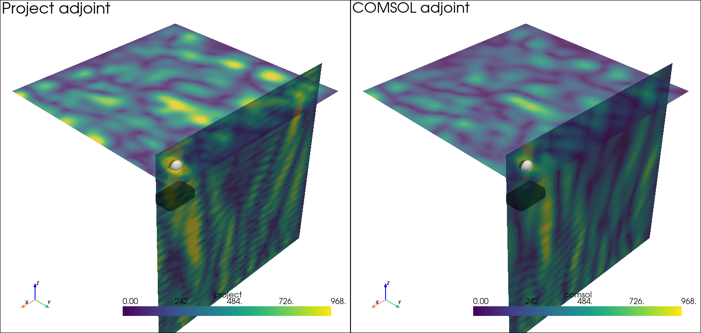
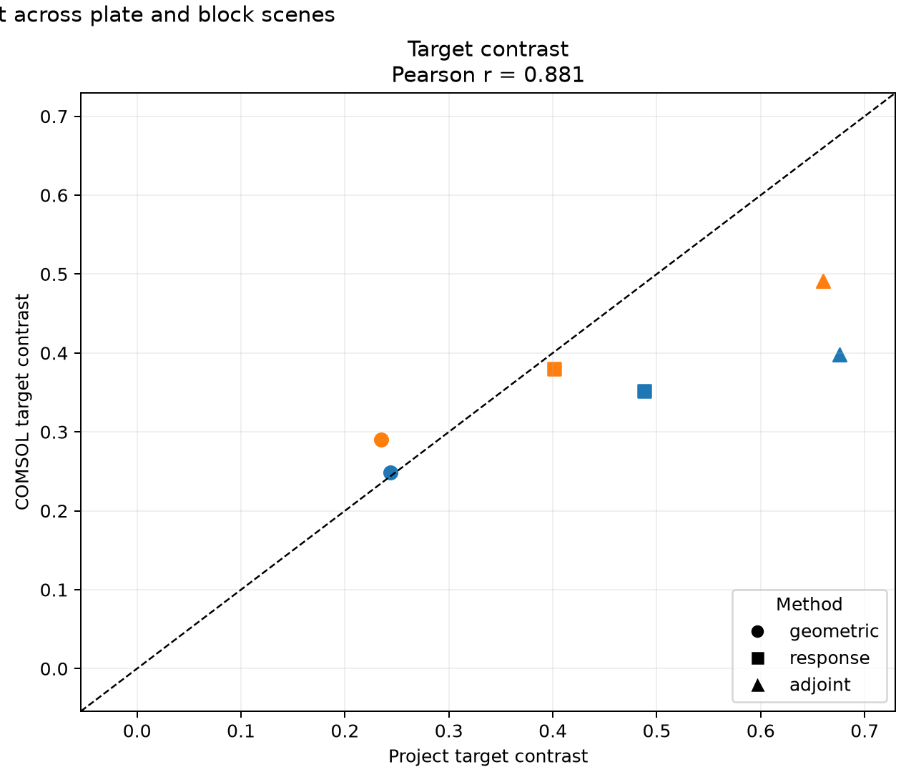
为了验证自研求解器，我们用相同几何、材料、边界条件和阵元相位，在 COMSOL 中独立重建模型。左侧展示平板障碍物和伴随相位下的三维结果，两种求解器都在目标附近形成增强区域，并呈现相近的传播结构。
验证共包含六种形状和两种边界条件，共十二个正演算例，顶部振幅空间相关为 0.596 到 0.733。进一步在平板和块体场景比较多种相位方法，两套求解器对目标对比度排序的 Pearson 相关达到 0.881；COMSOL 也复现了 7.46 到 13.23 dB 的目标增益。这说明当前模型能够捕捉影响聚焦优化的主要物理趋势。
G = A⁻¹B 是 256 个线性方程解的紧凑写法。
几何、材料与边界条件决定；固定场景下保持不变。
第 r 列 bᵣ 只在阵元 r 覆盖的底面网格点非零。
第 r 列 gᵣ 是该阵元单独激励得到的完整三维声场。
这里的 A 负责传播，B 负责说明每个阵元把固定幅值写到哪些底面网格点，G 的每一列则是一个阵元经过完整 PDE 传播后的三维响应。B 的第 r 列是局部稀疏输入，G 的第 r 列通常是全空间稠密声场。
G 等于 A 的逆乘 B 是线性求解的紧凑记号。程序先对凝聚后的 A 分解一次，再对每个 b_r 做前代和回代。当前接口按 16 列组织 RHS，256 列全部复用同一份因子。完成后保存 G，在线优化只做矩阵向量乘法。
c 汇总 loss 对每个网格点声压实部与虚部的敏感度。
这与在 2N 维实数空间中分别对实部、虚部求导完全等价。
Wⱼ 决定关注位置；残差决定增减方向；uⱼ / |uⱼ| 保留复声压方向。
目标点需要增强时产生负向敏感度，旁瓣区域需要抑制时产生正向敏感度；loss 区域外的点直接贡献为 0。
我们把每个 u_j 写成 x_j 加 i y_j，在普通实数域分别计算损失对 x_j 和 y_j 的偏导，再合并成 c_j。这样 dL 等于 Re(cᴴdu)，与二 N 维实数链式法则完全一致。按 Wirtinger 记号，c 等于二倍的 ∂L/∂u*，微分定义固定了因子约定。
右侧给出振幅匹配的具体结果。c 由 loss 决定，可以理解为虚拟伴随声源：目标点和背景区域按照优化目标产生敏感度。零振幅邻域由极小 epsilon 平滑，解析结果再通过中心差分核对。
VJP 将全场敏感度直接投影到 256 个相位变量。
第 r 个相位只旋转响应基的第 r 列。
zᵣ = G[:,r]ᴴc：把所有网格点对 loss 的影响汇总到阵元 r。
取实部后，每个阵元得到一个可直接用于优化的实数。
⊙ 表示逐元素乘法
H 表示共轭转置
VJP = Vector–Jacobian Product
VJP 直接计算其反向作用。
一次反向矩阵向量乘得到 256 个梯度。
固定场景用预计算 G 完成在线反传。
VJP 是损失敏感度向量与声场 Jacobian 的乘法过程。先看单个阵元：e 的 iφ 次方对 φ 求导会多出 i，所以声场导数是 i G 的第 r 列乘当前相位。再代入 dL 等于 Re(cᴴdu)，就得到单个相位梯度。
为了同时处理全部阵元，我们先算 z=Gᴴc。由于单阵元公式中是 cᴴG 的第 r 列，而 z_r 是 G 第 r 列的共轭转置乘 c，所以最终出现 z_r 的共轭。⊙ 表示逐元素乘法。该运算直接输出长度 256 的实数梯度，再由 Adam 更新相位。
绿色十字为目标位置；左为几何相位，右为解析梯度优化结果。
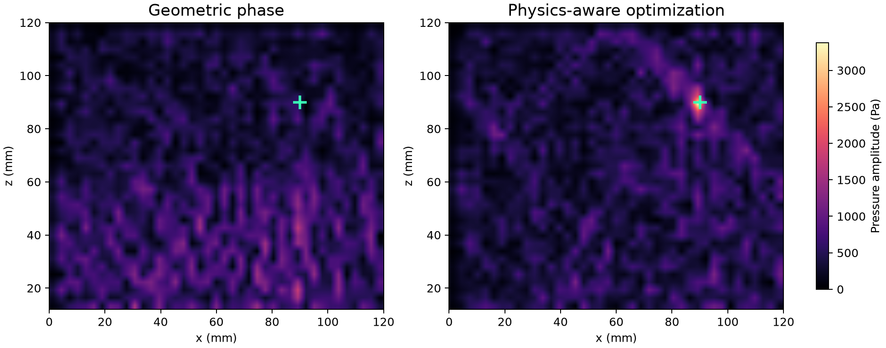
这里比较的是同一个反射边界场景。绿色十字是目标点，左侧几何相位的能量峰值偏离目标；右侧用完整物理场和解析梯度优化后，目标位置形成清晰焦点。
目标点声压从约 571 Pa 提升到 3380 Pa，目标与背景峰值之比从 0.31 提升到 2.81。两幅图使用同一切面和同一色标，因此可以直接比较能量分布。
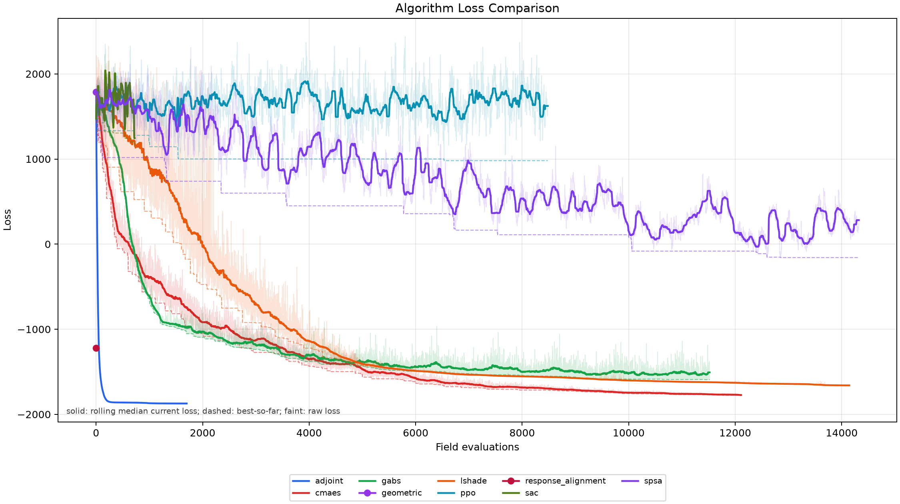
横轴是场评估次数，纵轴是 focal_contrast loss，越低越好。实线是滑动中位数，虚线是历史最优，浅线保留原始搜索波动。解析梯度方法以较少评估快速进入低损失区域。
这页先讲收敛形态，后面的共同门槛页再比较达到同一质量所需的秒数和评估次数。
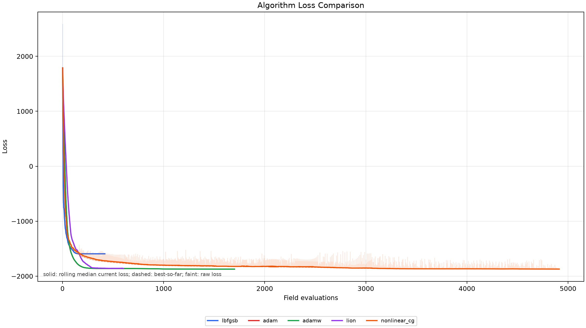
消融实验固定相同解析梯度，只更换五种更新器。曲线展示不同更新规则的早期下降和最终平台；下一页进一步用共同质量门槛统计首次达标时间和评估次数。
以首次满足 L ≤ L* 的时间与场评估次数作为统一口径。
相对 L-SHADE 的达标加速
L* = −1593.498
Adam 在本次消融中最早达标。
实验口径 12 × 12，41³ 网格，+x 反射，单种子 0；相同场景、初相位与响应基。
时间为在线优化阶段；左、右面板分别对应算法比较与更新器消融。
我们使用共同质量门槛，直接比较各算法第一次得到同质量解的代价。左图在门槛 −1593.498 下，Adam 约 1.46 秒、89 次评估，CMA-ES 29.30 秒，L-SHADE 41.44 秒；相对 L-SHADE 达标时间约快 28.4 倍。
右图固定解析 VJP，只替换更新器，在门槛 −1860 下 Adam 用 2.69 秒、350 次评估率先达标，AdamW 接近，随后是 Lion 和非线性共轭梯度。实验支持解析梯度加 Adam 作为当前默认方案。
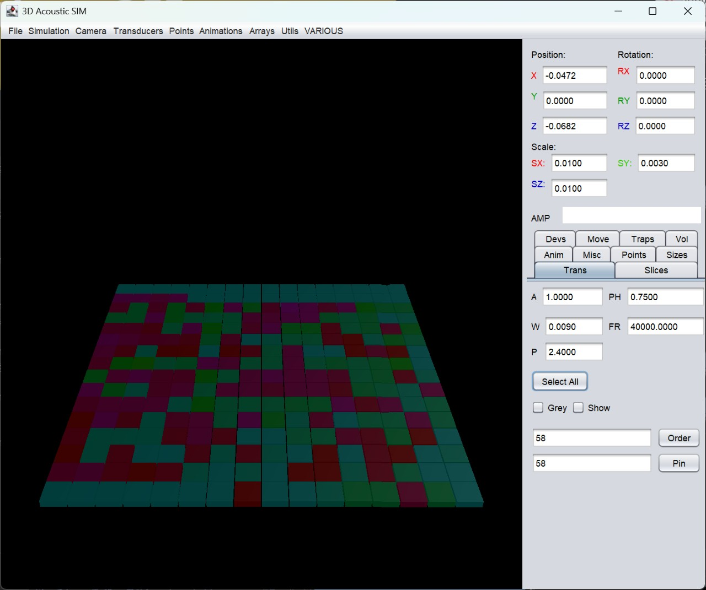
右侧是我们实际使用的 SonicSurface 阵列和相位对齐界面。SonicSurface 是 Morales 等在 2021 年提出的开放式空气超声相控阵平台，论文同时给出了硬件、驱动与目标幅度图案生成方法。
我们的优化器输出 256 路连续相位，本地服务按照阵元顺序映射通道，叠加逐阵元相位校准值，再量化为控制板支持的 32 个相位档，通过 SimpleFPGA 协议下发。当前实物和标定流程已经接入，下一步用麦克风扫描完成仿真与实测闭环。
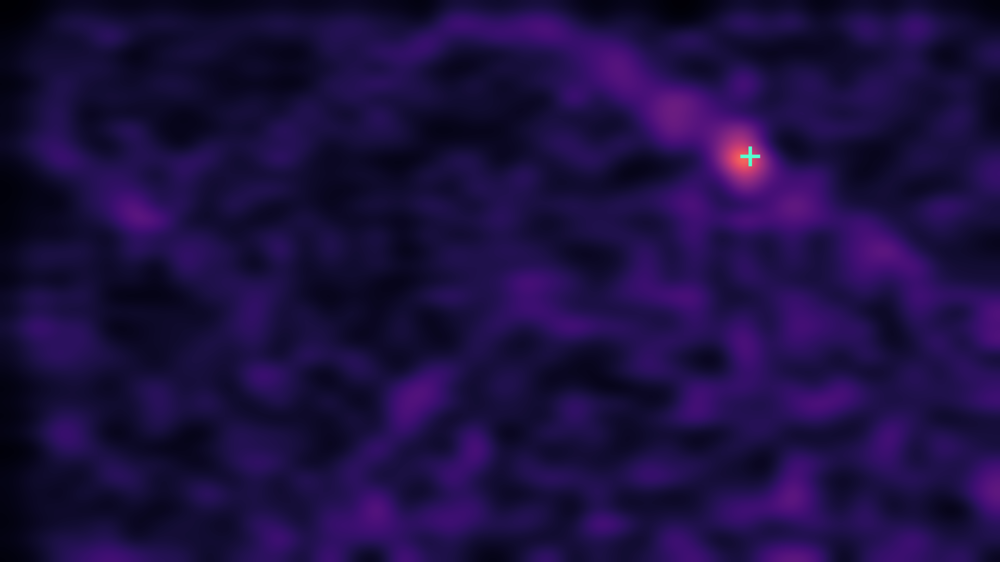
HAPTIFIELD
从三维场景到 256 路硬件相位，形成一条可计算、可优化、可验证的完整链路。
SDF + Helmholtz
边界凝聚 + cuDSS
响应基 + VJP
SonicSurface + 标定
下一步：完成标定后的麦克风扫描，以同一场景验证焦点位置、目标声压与旁瓣。
我们完成了从复杂环境三维建模、边界凝聚求解，到响应基和解析相位梯度，再到 SonicSurface 硬件接口与标定流程的贯通。
项目的核心价值是让传播环境本身参与相位设计。下一步将用标定后的麦克风扫描，把数值焦点、实际声场和最终应用效果连接起来。谢谢各位老师。